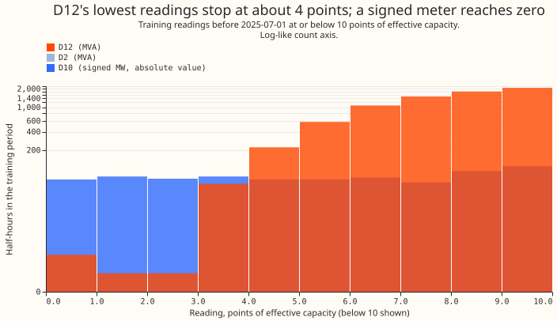
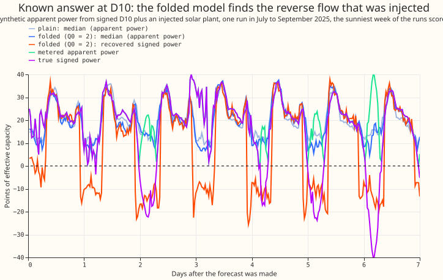
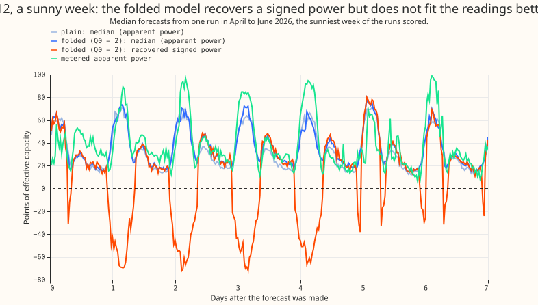
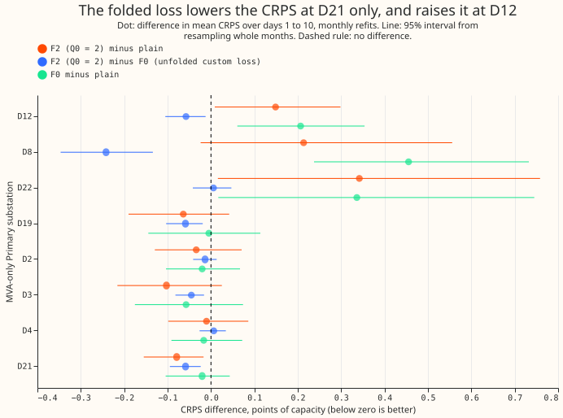

A folded loss for one XGBoost model at the MVA-only Primaries
The folded loss did not help, and the signed power it reports follows the start we gave the fit, not the readings. At D12, the one Primary substation known to have reverse flow, the folded XGBoost model scored 0.149 points of effective capacity worse than the plain XGBoost model (99.75% interval -0.061 to +0.378, which includes zero), and it left the under-forecast of sunny half-hours unchanged (median minus actual of -5.07 points against -5.04). Across the eight MVA-only Primaries the difference was +0.052 (-0.083 to +0.203), so the experiment cannot tell the two apart on the score. The recovered signed power is negative at sunny midday on 68% to 98% of half-hours at six MVA-only Primaries where earlier experiments found no reverse flow, and on 41% to 97% at six signed-MW Primaries where we added none. A signed MW forecast at an MVA meter therefore needs a structure that fixes the sign. Verdict: not supported (the sunny-bias and sign clauses of the hypothesis fail; the score clause is inconclusive).
The plain XGBoost model under-forecasts sunny half-hours at D12, and a folded loss might fix that. D12 and the other D-codes are anonymised primary substations of NGED, the electricity distribution network operator that supplies the data. At eight of the 16 Primaries ("MVA-only") the meter records apparent power in megavolt-amperes, which has no sign, so reverse flow (embedded solar generating more than the substation's demand) looks like demand. We trained one XGBoost model per Primary to predict a signed latent power l: the power a meter would show if it recorded direction. The loss compares the absolute value of l (smoothed, see below) with the metered reading. We asked whether this lets the model learn the V-shape that reverse flow makes in the readings, with apparent power falling towards zero at midday and rising again, and so give a signed MW forecast. Experiment 381 found the plain model under-forecasts sunny half-hours at D12 by about 5 points. Experiment 365 and experiment 366 supply the known-answer device of discarding the sign of a signed series. Reactive power is assumed zero, apart from a floor Q0 described below.
Each arm refits the plain model's recipe with a different loss, monthly. The recipe is
experiment 87's: rows of the
ensemble weather forecast's control member from the European Centre for Medium-Range Weather
Forecasts (ENS), a recency half-life of 0.5 years, 500 boosting rounds. Each arm forecasts 73 daily
runs (fold_a_every5d_v1) for days 1 to 14, scored under the demand-v1 protocol for days 1 to 10.
All scores are the continuous ranked probability score (CRPS) in points of effective capacity, a
percentage of the Primary's capacity. The arms are the plain model (XGBoost's built-in quantile
loss), F0 (a custom quantile loss with no fold), and F2 (the same loss applied to the folded value
sqrt(l² + Q0²), with Q0 of 0, 2, and 4 points). Q0 is a floor for the reactive power that keeps a
real apparent-power reading above zero. F2 starts its boosting from the plain model's fit minus a
tilt proportional to the forecast shortwave irradiance, which is the "start tilt" below. We did not
run F1 (a folded squared loss), F3 (a sign-then-magnitude pipeline), or a weekly refit.
Departures from the plan. The plan scored fold_a_daily_gap_v1, but the fits forecast the 73
runs of fold_a_every5d_v1, so no comparison with the GAM stack or BG2 is made. Contrasts C2, C4,
and C5 and predictions P4 to P6 were not tested. The placebo below had no pre-registered threshold,
so the conclusion that the sign follows the tilt rests on a control added after the plan.
Figures




Scores
Absolute scores. The refitted plain model matches experiment 379's stored monthly member
(only_M) with a mean absolute gap of 0.0065 MW in the median over 409,968 rows (MW here because
the stored member is in MW). F2 (Q0 = 2) is 0.01 to 0.10 points better than plain at D2, D3, D4,
D19, and D21, 0.21 worse at D8, and 0.34 worse at D22.
| Primary | Plain | F0 | F2, Q0 = 0 | F2, Q0 = 2 | F2, Q0 = 4 |
|---|---|---|---|---|---|
| D12 | 6.860 | 7.067 | 7.009 | 7.009 | 7.003 |
| D8 | 7.763 | 8.218 | 7.987 | 7.976 | 7.995 |
| D22 | 3.930 | 4.266 | 4.280 | 4.272 | 4.270 |
| D19 | 3.290 | 3.285 | 3.223 | 3.226 | 3.216 |
| D4 | 2.517 | 2.500 | 2.501 | 2.506 | 2.500 |
| D21 | 2.407 | 2.387 | 2.338 | 2.328 | 2.326 |
| D2 | 2.328 | 2.307 | 2.300 | 2.294 | 2.296 |
| D3 | 1.759 | 1.702 | 1.663 | 1.657 | 1.659 |
The folded loss does not lower the score at D12 or pooled. The two confirmatory contrasts use 99.75% intervals (four contrasts, Bonferroni); every other interval on this page is descriptive.
- C1, F2 (Q0 = 2) minus plain: eight MVA-only Primaries +0.052 (-0.083 to +0.203); without D8 +0.029 (-0.120 to +0.155); D12 alone +0.149 (-0.061 to +0.378). On sunny half-hours: -0.012 (-0.147 to +0.143) pooled and +0.066 (-0.347 to +0.521) at D12.
- C3, F2 (Q0 = 2) minus F0: eight Primaries -0.058 (-0.087 to -0.030); D12 alone -0.058 (-0.129 to +0.012), the same size as pooled with an interval that includes zero. On sunny half-hours: -0.287 (-0.467 to -0.161) pooled and +0.080 (-0.374 to +0.300) at D12.
- F0 minus plain (descriptive): +0.110 (-0.026 to +0.253) pooled and +0.207 (-0.012 to +0.439) at D12, so the custom loss alone scored worse in this run, with an interval that includes zero. On sunny half-hours it is +0.275 (+0.111 to +0.530) pooled.
- Leave-one-out, C1: every 95% interval lay within -0.07 to +0.19, and the point differences were +0.010 to +0.074.
- Sensitivity to Q0 (descriptive): Q0 = 0 against 2 is +0.004 (-0.001 to +0.009); Q0 = 4 against 2 is -0.000 (-0.007 to +0.006). The floor does not matter at this precision.
- Sunny-half-hour bias at D12 (median minus actual, so a negative value is an under-forecast): plain -5.04 points, F0 -3.38, F2 -5.07. At D19 the bias is +6.2 for plain and +6.3 for F2.
F2's quantile band is too narrow at all four tail quantiles. Pooled over the eight Primaries (nominal coverage 0.01, 0.05, 0.95, 0.99):
| Arm | Coverage q01 | q05 | q95 | q99 | Pinball q01 | q05 | q95 | q99 |
|---|---|---|---|---|---|---|---|---|
| Plain | 0.013 | 0.071 | 0.932 | 0.991 | 0.248 | 0.890 | 0.986 | 0.331 |
| F2, Q0 = 2 | 0.024 | 0.090 | 0.895 | 0.965 | 0.265 | 0.955 | 1.042 | 0.301 |
F2's q99 pinball loss is 9% lower than plain's, although its coverage is further from 0.99. At D12 the q01 pinball loss is 0.305 for plain and 0.443 for F2. Threshold-weighted CRPS is 0.200 for plain and 0.201 for F2. We did not score the half-hours affected by nulled power-lag inputs or by load shifts, because the avoidable curtailment cost is not defined for unsigned MVA meters.
The recovered sign follows the start, not the readings
The known-answer gate was passed, but it was too easy. We took the six signed-MW Primaries, subtracted a synthetic solar plant (a multiple of ERA5 shortwave, sized from the training window only) to create reverse flow, discarded the sign, and trained on the unsigned series alone. Reactive power was added in four settings. With the start tilt at 1.0, F2 recovered the sign of the reverse-flow half-hours: balanced accuracy (the mean of the recall on reverse-flow half-hours and the share of other half-hours correctly left positive) was 0.89 to 0.92, recall 0.89 to 0.98, and the false-reverse rate 0.12 to 0.14, at every reactive setting and at Q0 of 0, 2, and 4. The signed error on reverse-flow half-hours was 5.8 to 6.6 points against 21 to 25 for the plain model. With no tilt the balanced accuracy was 0.50, the same as the plain model's. The gate was too easy because the injected solar has the same linear form in shortwave as the tilt. A rule that sets the plain median negative when ERA5 shortwave exceeds a threshold fitted on the training window scored a balanced accuracy of 0.94 to 0.96 and a false-reverse rate of 0.07 to 0.08, better than F2 on both.
At the MVA-only Primaries the sign is wrong at six of eight. Earlier experiments (experiment 366, a rule on readings and irradiance, and experiment 370, which estimated PV capacity at the eight Primaries) found reverse flow at D12 and at none of the other seven, with no signed truth at any. F2's latent power is negative at sunny midday (ERA5 shortwave above 600 W/m², 10 to 14 UTC, days 1 to 10) on this share of half-hours: D2 0.74, D3 0.68, D4 0.07, D8 0.98, D12 0.17, D19 0.77, D21 0.70, D22 0.98. The share is low at D4 and D12 and 0.68 to 0.98 at the other six, so the readings did not set the sign. The low value at D4 is not explained.
With no injected solar the folded model still reports reverse flow. At the six signed-MW Primaries, with the sign discarded and nothing injected, F2 (Q0 = 2) recovers a negative power at sunny midday on this share of half-hours: D5 0.97, D9 0.41, D10 0.94, D11 0.43, D14 0.64, D16 0.81. True reverse flow (below -1 point) is absent at D5, D9, D11, D14, and D16 and covers 6.5% of these half-hours at D10. Over all half-hours of days 1 to 10 the false-reverse rate is 0.02 to 0.16, and the mean absolute error of the signed power is 8.0 to 11.8 points against 5.4 for the plain model, pooled over the six Primaries. This is the control the gate lacked.
Checks
The custom loss and the plain model differ in more than the loss. XGBoost's built-in quantile
loss rewrites each leaf value from the residuals, which a custom objective cannot copy, and the
custom objective's Hessian is a constant (e00387_fit.py:96), so its leaf values follow a step
rule, not a Newton step. F0 and F2 also start from the plain model's predictions on its own training
rows and then boost 500 more rounds, so they get 1,000 rounds against the plain model's 500. "F2
minus plain" therefore mixes the fold with a weaker optimiser, and "F2 minus F0" is the cleaner
contrast, against a weak reference. An independent audit confirmed the gradient (the
finite-difference self-test passes) and these points. The latent's median column is read before
sorting, so it could differ from the sorted median where quantile levels cross; the latent is a
diagnostic and the crossing rate was not measured.
The mean absolute error of the median points the same way as the score. The forecasts store 11 quantiles, not a mean, so we report the mean absolute error of the median in place of a median-minus-mean check: plain 6.895, F0 7.028, F2 (Q0 = 2) 6.931 points, averaged over the eight Primaries. Scoring uses the folded quantiles of the reading, which are valid quantiles of the metered value; the signed latent is a diagnostic and no score depends on it.
Two review triggers fired. The result contradicted its prediction (we predicted -0.05 to -0.25 points at D12), and the known-answer control was too easy. The checks above and the placebo are the response.
What to try next
- A signed MW forecast at the MVA-only Primaries needs the sign fixed by structure, for example a latent built as demand minus a non-negative generation term that is monotone in shortwave, with the generation capacity estimated as in experiment 370. Neither the loss nor a tilted start identifies the sign.
- The fold left the D12 under-forecast of sunny half-hours unchanged (-5.07 against -5.04), although the custom loss alone moved it (F0, -3.38). Look at the ensemble's shortwave spread and at a sunny-day input.
- Give each arm of a custom-loss comparison the same number of rounds, and compare against XGBoost's built-in quantile loss.